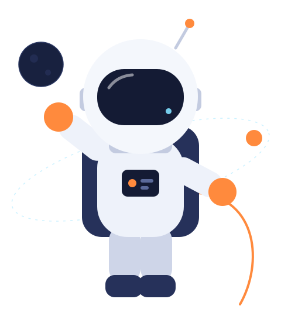

[Tempat gambar proyek]
[Nama proyek unggulan]
[Dua atau tiga kalimat tentang masalah yang diselesaikan, peranmu, dan hasil yang dicapai. Proyek ini diberi tempat paling besar karena paling mewakili kemampuanmu.]
Baca studi kasus
Memeriksa sistem...
0%
Siap untuk misi berikutnya
[PERAN KAMU] yang merancang dan membangun situs, aplikasi, dan antarmuka yang rapi, cepat, dan nyaman dipakai.
[Ceritakan singkat siapa kamu, apa yang kamu kerjakan, dan apa yang membuatmu bersemangat. Dua sampai tiga kalimat sudah cukup.]
[Tambahkan satu paragraf tentang cara kerjamu: bagaimana kamu berkolaborasi, apa yang kamu utamakan, dan jenis proyek yang kamu cari.]
[Dua atau tiga kalimat tentang masalah yang diselesaikan, peranmu, dan hasil yang dicapai. Proyek ini diberi tempat paling besar karena paling mewakili kemampuanmu.]
Baca studi kasus[Perusahaan atau klien]
[Ringkasan tanggung jawab dan pencapaian utama.]
[Perusahaan atau klien]
[Ringkasan tanggung jawab dan pencapaian utama.]
[Institusi atau perusahaan]
[Ringkasan tanggung jawab dan pencapaian utama.]